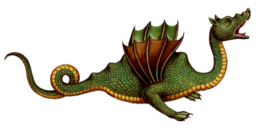
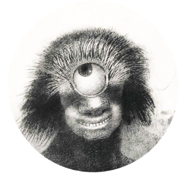
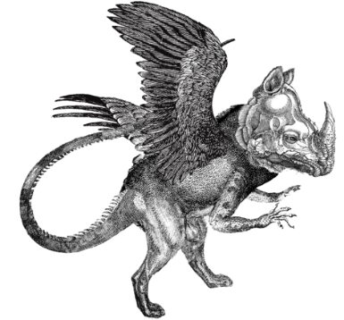

Monstres
Indfinitions des cratures imaginaires
"Rien dans la vie n'est craindre, tout doit tre compris.
C'est maintenant le moment de comprendre davantage, afin de craindre moins."
C'est maintenant le moment de comprendre davantage, afin de craindre moins."
-Marie Curie
Ulysse Bonduelle
Mmoire 2022
Mmoire 2022
Sous la direction
de Pierre Bourdareau
de Pierre Bourdareau
La crainte est une motion comprise de manire universelle par les diffrentes cultures du monde;
et si les monstre sont par essence associs au sentiment de peur dans limaginaire collectif , il est intressant de questionner
les raisons de cette association, dans une optique de mieux comprendre la relation que nous entretenons avec ces derniers.
Si cette phrase de Marie Curie ne se rfre pas ici directement ces cratures, je trouve intressant dappliquer cette faon de penser aux monstres, des cratures ayant t conues primairement cet effet et qui semblent -au premier abord- appartenir plus au domaine des rcits de fiction que de la science rationnelle.
Au travers de ce mmoire, je cherche interroger le statut du monstre au moyen doutils didactiques et de cls didentifications,
prsents sous la forme de diffrentes explorations et cartographies interactives.
Ces modules sont le rsultat de rflexions appliques sur le sujet du monstre et sont donns voir au lecteur dans le but de le faire exprimenter alternativement autour de ce sujet et ainsi questionner les dfinitions prconues que lon donne au monstre.
Le cur de ce mmoire ne vise donc pas dresser un portrait type du monstre, qui le restreindrait un seul carcan dfinitoire.
Aussi, plutt que de me contenter de peindre le paysage de diversit que le monstre incarne, je cherche aller plus loin et
explorer chacune des nombreuses facettes qui constituent ce sujet afin de valoriser la dimension qualitative du monstre,
par la recherche de lignes de comprhension formelles et de motifs narratifs formant un cosystme complexe.
Comme je le prsente dans cette partie introductive, les diffrentes notions auquel le monstre se rattache semblent parfaitement interconnectes, pourtant chacune dentre elles peut potentiellement tre explore indpendamment des autres. Ainsi, plutt que de tenter dlucider la question "quest ce quun monstre ?" dont la rponse semble en apparence si triviale, le travail prsent ici trouve son importance dans les dtails et les nuances qui englobent ce terme et rside de ce fait dans lindfinition et lambigut du sujet.
Je cherche ainsi rendre lisible la complexit du monstre au travers doutils de vulgarisation, utilisant la classification au service du design graphique pour naviguer les bases de donnes ainsi que les compilations dimages et d'histoires qui englobent ce sujet.
Pour nous affranchir des ides prconues, il nous faut dabord les embrasser et analyser ce que nous savons des monstres.
Un monstre est dfini comme un individu, dont les caractres physiques et/ou comportementaux sloignent de la norme. Cet cart que le monstre possde avec son environnement provoque alors souvent chez son observateur un sentiment de surprise, de peur et de fascination.
et si les monstre sont par essence associs au sentiment de peur dans limaginaire collectif , il est intressant de questionner
les raisons de cette association, dans une optique de mieux comprendre la relation que nous entretenons avec ces derniers.
Si cette phrase de Marie Curie ne se rfre pas ici directement ces cratures, je trouve intressant dappliquer cette faon de penser aux monstres, des cratures ayant t conues primairement cet effet et qui semblent -au premier abord- appartenir plus au domaine des rcits de fiction que de la science rationnelle.
Au travers de ce mmoire, je cherche interroger le statut du monstre au moyen doutils didactiques et de cls didentifications,
prsents sous la forme de diffrentes explorations et cartographies interactives.
Ces modules sont le rsultat de rflexions appliques sur le sujet du monstre et sont donns voir au lecteur dans le but de le faire exprimenter alternativement autour de ce sujet et ainsi questionner les dfinitions prconues que lon donne au monstre.
Le cur de ce mmoire ne vise donc pas dresser un portrait type du monstre, qui le restreindrait un seul carcan dfinitoire.
Aussi, plutt que de me contenter de peindre le paysage de diversit que le monstre incarne, je cherche aller plus loin et
explorer chacune des nombreuses facettes qui constituent ce sujet afin de valoriser la dimension qualitative du monstre,
par la recherche de lignes de comprhension formelles et de motifs narratifs formant un cosystme complexe.
Comme je le prsente dans cette partie introductive, les diffrentes notions auquel le monstre se rattache semblent parfaitement interconnectes, pourtant chacune dentre elles peut potentiellement tre explore indpendamment des autres. Ainsi, plutt que de tenter dlucider la question "quest ce quun monstre ?" dont la rponse semble en apparence si triviale, le travail prsent ici trouve son importance dans les dtails et les nuances qui englobent ce terme et rside de ce fait dans lindfinition et lambigut du sujet.
Je cherche ainsi rendre lisible la complexit du monstre au travers doutils de vulgarisation, utilisant la classification au service du design graphique pour naviguer les bases de donnes ainsi que les compilations dimages et d'histoires qui englobent ce sujet.
Pour nous affranchir des ides prconues, il nous faut dabord les embrasser et analyser ce que nous savons des monstres.
Un monstre est dfini comme un individu, dont les caractres physiques et/ou comportementaux sloignent de la norme. Cet cart que le monstre possde avec son environnement provoque alors souvent chez son observateur un sentiment de surprise, de peur et de fascination.
Significations du Monstre
tymologiquement, les langues latines donnent au monstre pour racine monstrum, qui signifie "avertissement, flau ou signe divin ".
Monstrum drive lui-mme de moneo "avertir" et donne sous sa forme de verbe monstrare, "dmontrer ou indiquer ".
Cette racine donnera le verbe monstrer en ancien franais, qui deviendra son tour montrer. Le monstre semble tre par dfinition
exister pour tre montr ou donn voir, il est lexception que lon pointe du doigt dans une foule et qui veille la curiosit humaine.
Le grec ancien se rfre au monstre par lemploi du mot (tras) qui signifie "animal fabuleux, chose prodigieuse ".
Tras tant lui mme apparent au tchque ry (cary) "sortilge " et lindo-europen commun kwer "faire, crer " signifiant proprement "crature ". Le monstre semble tre ici dfini par son appartenance au domaine de linvention et du surnaturel, il est le sujet de fables ou de mythes et son existence mme rside dans le fait quelle est conte au travers de rcits.
Si cette racine semble au premier abord dfinir le monstre seulement sous son aspect fantastique, elle sera employe au courant du 18 me sicle pour appeler la discipline scientifique de la tratologie. , (teratologia), se traduisant littralement par "rcit fabuleux " et dsignant en ralit la science qui consiste en le recensement et la classification des anomalies congnitales des tres vivants
Cette pratique constituant les premiers pas de lembryologie moderne que nous connaissons actuellement, par consquent appelle deux registres trs loigns et le statut du monstre quelle dfinit oscille entre crature fantastique et objet de science.
En allemand enfin, le mot Ungerheuer drive du vieil allemand ungehiuri (terrible, effrayant, fantomatique), compos de gehiuri (plaisant, gentil, harmonieux) et du suffixe ngatif un-. Dans ce dernier cas, Ungerheuer dfinir le monstre de manire descriptive, le dpeignant comme antithse du bien et de la justesse. Ltymologie allemande du monstre semble faire appel au sentiment instinctif de rejet que lobservateur ressent lorsquil est confront ce que lon considre comme monstrueux.
Au travers de plusieurs problmatiques, nous confronterons ces diffrentes dfinitions, et dmontrant ventuellement par ce biais quelles ne permettent pas, elles seules de dresser un aspect unilatral du monstre.
Inversement, nous analyserons certaines incohrences entourant ce sujet qui, du fait de leur existence, engagent le dpeindre comme une figure devant tre observe au travers dun spectre.
Monstrum drive lui-mme de moneo "avertir" et donne sous sa forme de verbe monstrare, "dmontrer ou indiquer ".
Cette racine donnera le verbe monstrer en ancien franais, qui deviendra son tour montrer. Le monstre semble tre par dfinition
exister pour tre montr ou donn voir, il est lexception que lon pointe du doigt dans une foule et qui veille la curiosit humaine.
Le grec ancien se rfre au monstre par lemploi du mot (tras) qui signifie "animal fabuleux, chose prodigieuse ".
Tras tant lui mme apparent au tchque ry (cary) "sortilge " et lindo-europen commun kwer "faire, crer " signifiant proprement "crature ". Le monstre semble tre ici dfini par son appartenance au domaine de linvention et du surnaturel, il est le sujet de fables ou de mythes et son existence mme rside dans le fait quelle est conte au travers de rcits.
Si cette racine semble au premier abord dfinir le monstre seulement sous son aspect fantastique, elle sera employe au courant du 18 me sicle pour appeler la discipline scientifique de la tratologie. , (teratologia), se traduisant littralement par "rcit fabuleux " et dsignant en ralit la science qui consiste en le recensement et la classification des anomalies congnitales des tres vivants
Cette pratique constituant les premiers pas de lembryologie moderne que nous connaissons actuellement, par consquent appelle deux registres trs loigns et le statut du monstre quelle dfinit oscille entre crature fantastique et objet de science.
En allemand enfin, le mot Ungerheuer drive du vieil allemand ungehiuri (terrible, effrayant, fantomatique), compos de gehiuri (plaisant, gentil, harmonieux) et du suffixe ngatif un-. Dans ce dernier cas, Ungerheuer dfinir le monstre de manire descriptive, le dpeignant comme antithse du bien et de la justesse. Ltymologie allemande du monstre semble faire appel au sentiment instinctif de rejet que lobservateur ressent lorsquil est confront ce que lon considre comme monstrueux.
Au travers de plusieurs problmatiques, nous confronterons ces diffrentes dfinitions, et dmontrant ventuellement par ce biais quelles ne permettent pas, elles seules de dresser un aspect unilatral du monstre.
Inversement, nous analyserons certaines incohrences entourant ce sujet qui, du fait de leur existence, engagent le dpeindre comme une figure devant tre observe au travers dun spectre.
Le Monstre, sujet pictural ou littraire?
Le monstre est celui que lon pointe du doigt et que lon remarque du fait de ses diffrences, toutefois il se dfinit aussi comme une crature appartenant au monde des contes et lgendes.
Ces deux facteurs peuvent sembler conflictuels, en effet comment peut-on proprement montrer une chose nexistant que dans un registre imaginaire, hormis par reprsentation picturale?
Lillustration comme outil de reprsentation semble tre le seul compromis possible que nous avons trouv pour rpondre au dsir de montrer rellement ces cratures issues exclusivement de rcits fictifs.
Cependant, du fait de navoir aucun modle rel sur lequel se baser, cet outil trouve ses limites lorsquil il est question de maintenir une cohrence entre les diffrentes dpictions dun monstre.
Si lon considre pour exemple ces trois reprsentations de dragon, un monstre universellement prsent dans les diffrentes
mythologies du globe, on remarque des diffrences fondamentales dans la manire dont chacun est reprsent.

Ces deux facteurs peuvent sembler conflictuels, en effet comment peut-on proprement montrer une chose nexistant que dans un registre imaginaire, hormis par reprsentation picturale?
Lillustration comme outil de reprsentation semble tre le seul compromis possible que nous avons trouv pour rpondre au dsir de montrer rellement ces cratures issues exclusivement de rcits fictifs.
Cependant, du fait de navoir aucun modle rel sur lequel se baser, cet outil trouve ses limites lorsquil il est question de maintenir une cohrence entre les diffrentes dpictions dun monstre.
Si lon considre pour exemple ces trois reprsentations de dragon, un monstre universellement prsent dans les diffrentes
mythologies du globe, on remarque des diffrences fondamentales dans la manire dont chacun est reprsent.
Reproduction de la gravure du Draco Aethiopius,
de Ulisse Aldrovandi, Historiae naturalis: De serpentibus de Johannes Jonstonus Amsterdam (1657)
de Ulisse Aldrovandi, Historiae naturalis: De serpentibus de Johannes Jonstonus Amsterdam (1657)
Reproduction de l'enluminure du grand dragon,
paru dans le Tacuinum Sanitaris, Milan, (XIIIeme S.)
paru dans le Tacuinum Sanitaris, Milan, (XIIIeme S.)
Dragon europen cracheur de feu,
gravure de Friedrich Justin Bertuch, (1806)
gravure de Friedrich Justin Bertuch, (1806)
Illustration de Henry Justice Ford,
The adventure with scylla, dans Tales of Troy and Greece d'Andrew Lang (1907)
The adventure with scylla, dans Tales of Troy and Greece d'Andrew Lang (1907)
Scylla dvore six compagnons d'Ulysse,
Peinture de Styka Jan, (1922-1927)
Illustration de l'Odysse d'Homre
Peinture de Styka Jan, (1922-1927)
Illustration de l'Odysse d'Homre
Figurine de scylla en bronze
Muse national d'archologie d'Athnes
IVme S. av JC.
Muse national d'archologie d'Athnes
IVme S. av JC.
La dfinition du dragon est largement accepte comme tant une immense crature aile aux griffes de lion et la queue de reptile.
Ces trois reprsentations respectent chacune ces caractristiques, mais prsentent aussi de grandes diffrences morphologiques avec
chacune dentre elles, comme la forme du corps, le nombre de membres ou la position des ailes.
On peut se poser la question du moyen le plus judicieux de prsenter le monstre: bien que plus justement dfini par sa description crite, ces dernires -aussi prcises soient elles- ne permettent pas de montrer proprement dit le monstre, mais seulement de lister les caractristiques physiques et comportementales que prsente ce dernier. Ces descriptions ne trouvent leur utilit que dans lventualit, en outre improbable, o lobservateur serait confront rencontrer un monstre et chercherait lidentifier la manire d'un zoologiste.
Lillustration, de son ct, est tellement libre du fait de la nature imaginaire de son sujet quil peut paratre difficile de reconnatre hors contexte certains monstres interprts par diffrents artistes.
Si lon prend lexemple de Scylla, une femme transforme en monstre marin se dressant sur la route dUlysse, on remarque une forte
disparit dans lapparence des interprtations de cette dernire, produites d'aprs la description qui en est faite dans L'Odysse d'Homre.
Ces trois reprsentations respectent chacune ces caractristiques, mais prsentent aussi de grandes diffrences morphologiques avec
chacune dentre elles, comme la forme du corps, le nombre de membres ou la position des ailes.
On peut se poser la question du moyen le plus judicieux de prsenter le monstre: bien que plus justement dfini par sa description crite, ces dernires -aussi prcises soient elles- ne permettent pas de montrer proprement dit le monstre, mais seulement de lister les caractristiques physiques et comportementales que prsente ce dernier. Ces descriptions ne trouvent leur utilit que dans lventualit, en outre improbable, o lobservateur serait confront rencontrer un monstre et chercherait lidentifier la manire d'un zoologiste.
Lillustration, de son ct, est tellement libre du fait de la nature imaginaire de son sujet quil peut paratre difficile de reconnatre hors contexte certains monstres interprts par diffrents artistes.
Si lon prend lexemple de Scylla, une femme transforme en monstre marin se dressant sur la route dUlysse, on remarque une forte
disparit dans lapparence des interprtations de cette dernire, produites d'aprs la description qui en est faite dans L'Odysse d'Homre.
Takiyasha la sorcire et le fantme du squelette,
Utagawa Kuniyoshi, Victoria and Albert Museum
Impression sur bois en tryptique, (1844)
Utagawa Kuniyoshi, Victoria and Albert Museum
Impression sur bois en tryptique, (1844)
Le Minotaure, George Frederic Watts
Tate collection, Londres
Huile sur toile (1885)
Tate collection, Londres
Huile sur toile (1885)
On distingue deux catgories de texte traitant des monstres:
Les textes mythologiques qui, comme leur nom le suggre, sont vise fictive et
les crits tratologiques bass sur des observations relles danomalies mdicales.
Ces deux typologies du monstrueux, appartenant des registres narratifs bien diffrents, prsentent nanmoins certaines similitudes et nous pouvons tablir plusieurs ponts entre ces deux disciplines.
En premier lieu, quil sagisse dun monstre mythologique ou tratologique,
ce dernier est toujours dfini par un nom et une description physique.
La manire dont le monstre est nomm fait office dans une certaine mesure damorce descriptive, il contribue faciliter lassociation entre sa description et les reprsentations physiques que lon en fait.
Les noms des monstres mythologiques font souvent appel des lments contextuels et servent replacer la crature au sein du mythe dont il est issu tout en maintenant une part de mystre dans le but de garder une audience captive.
Le nom du minotaure par exemple, associe le nom du roi de Crte Minos lanimal du taureau.
Se traduisant par le "Taureau de Minos" on suppose sans plus dinformation quil sagit dune crature aux traits bovins dont lexistence est lie de quelconque faon ce roi.
Un autre exemple peut tre celui du Gashadokuro japonais, dont le nom se traduit littralement par "squelette affam" et suggre les intentions
prdatrices de ce monstre squelettique.
Les textes mythologiques qui, comme leur nom le suggre, sont vise fictive et
les crits tratologiques bass sur des observations relles danomalies mdicales.
Ces deux typologies du monstrueux, appartenant des registres narratifs bien diffrents, prsentent nanmoins certaines similitudes et nous pouvons tablir plusieurs ponts entre ces deux disciplines.
En premier lieu, quil sagisse dun monstre mythologique ou tratologique,
ce dernier est toujours dfini par un nom et une description physique.
La manire dont le monstre est nomm fait office dans une certaine mesure damorce descriptive, il contribue faciliter lassociation entre sa description et les reprsentations physiques que lon en fait.
Les noms des monstres mythologiques font souvent appel des lments contextuels et servent replacer la crature au sein du mythe dont il est issu tout en maintenant une part de mystre dans le but de garder une audience captive.
Le nom du minotaure par exemple, associe le nom du roi de Crte Minos lanimal du taureau.
Se traduisant par le "Taureau de Minos" on suppose sans plus dinformation quil sagit dune crature aux traits bovins dont lexistence est lie de quelconque faon ce roi.
Un autre exemple peut tre celui du Gashadokuro japonais, dont le nom se traduit littralement par "squelette affam" et suggre les intentions
prdatrices de ce monstre squelettique.
Comment donner sens aux monstres?
Ces noms servent daccroches narratives, rsumant sommairement la place que va tenir le monstre dans lhistoire avant quelle soit conte.
Un nom mmorable permet dintriguer le spectateur et incite ceux qui ne la connaissent pas couter les lgendes traitants de la crature en question.
La nomenclature tratologique, propose par Isidore Geoffroy St Hilaire dans son "histoire gnrale et particulire des anomalies de lorganisation chez lhomme et les animaux" est employe pour dfinir les diffrents types de difformits du vivant.
Les mots quelle emploie sont composs dune centaine de racines grecques ou latines, qui sarticulent de manire construire un nom dcrivant laspect que prsente lindividu prsentant le cas tratologique en question.
Un individu Phocomle, Du grec ancien , phk "phoque" et , mlos "membre" dsigne ainsi un individu chez lequel les pieds et les mains paraissent exister seuls et s'insrent immdiatement sur le tronc comme chez les phoques.
Un individu podencphale, Du grec ancien podos "pied" et enkefalos "cerveau" sert dsigner un individu dont le cerveau, situ hors du crne, est port sur une sorte de pdoncule.
Bien plus explicites et moins mystrieux, les termes employs en tratologie suivent une logique destine classifier les anomalies produites par le vivant.
Le mythe ne semble pas avoir sa place dans les appellations tratologiques puisque cette science existe justement afin de donner une logique dorganisation des formes rares (mais non uniques) que prennent parfois les corps vivants.
Un nom mmorable permet dintriguer le spectateur et incite ceux qui ne la connaissent pas couter les lgendes traitants de la crature en question.
La nomenclature tratologique, propose par Isidore Geoffroy St Hilaire dans son "histoire gnrale et particulire des anomalies de lorganisation chez lhomme et les animaux" est employe pour dfinir les diffrents types de difformits du vivant.
Les mots quelle emploie sont composs dune centaine de racines grecques ou latines, qui sarticulent de manire construire un nom dcrivant laspect que prsente lindividu prsentant le cas tratologique en question.
Un individu Phocomle, Du grec ancien , phk "phoque" et , mlos "membre" dsigne ainsi un individu chez lequel les pieds et les mains paraissent exister seuls et s'insrent immdiatement sur le tronc comme chez les phoques.
Un individu podencphale, Du grec ancien podos "pied" et enkefalos "cerveau" sert dsigner un individu dont le cerveau, situ hors du crne, est port sur une sorte de pdoncule.
Bien plus explicites et moins mystrieux, les termes employs en tratologie suivent une logique destine classifier les anomalies produites par le vivant.
Le mythe ne semble pas avoir sa place dans les appellations tratologiques puisque cette science existe justement afin de donner une logique dorganisation des formes rares (mais non uniques) que prennent parfois les corps vivants.
Monstre ectromle phocomle d'aprs Ambroise Par
Dictionnaire populaire de mdecine usuelle, tome 1
Labarthe, Paul (1887) Muse Dupuytren
Dictionnaire populaire de mdecine usuelle, tome 1
Labarthe, Paul (1887) Muse Dupuytren
Planche de podencphale issue de : Geoffroy Saint-Hilaire (tienne), Philosophie anatomique. Des monstruosits..., Paris : Mquignon-Marvis, 1822, pl. VI. Dessin de Huet, gravure de De Ple pre.
Cependant, mythologie et tratologie communiquent bien des niveaux et si la tratologie nest apparue quau courant du 18eme sicle, les individus prsentant des anomalies morphologiques sont rfrencs depuis lantiquit dans de nombreuses mythologies.
Nains ou gants, cratures ttes multiples comme lhydre ou membres manquants comme les sciapodes, tous trouvent leur place dans la classification tratologique de Saint-hilaire. De plus, certains termes tratologiques comme la cyclocphalie ou la sirnomlie tirent leur nomenclature directement de figures mythologiques comme le cyclope Polyphme ou les sirnes nordiques.
Nains ou gants, cratures ttes multiples comme lhydre ou membres manquants comme les sciapodes, tous trouvent leur place dans la classification tratologique de Saint-hilaire. De plus, certains termes tratologiques comme la cyclocphalie ou la sirnomlie tirent leur nomenclature directement de figures mythologiques comme le cyclope Polyphme ou les sirnes nordiques.
Mythologies comme tratologies partagent un objectif commun: Donner sens au monstre, par le vecteur de la fiction ou de la science.
A gauche: Tte de Polyphme par Johann Heinrich Wilhelm Tischbein
1801, daprs une sculpture originale du 2e sicle av. J.-C.
A droite: Un enfant avec un il central
dans Anomalies and curiosities of medicine de G.M. Gould and W.L. Pyle, 1896
1801, daprs une sculpture originale du 2e sicle av. J.-C.
A droite: Un enfant avec un il central
dans Anomalies and curiosities of medicine de G.M. Gould and W.L. Pyle, 1896
A gauche: Sirnes, gravure colore par J.Pass
dans Encycloapedia Londinensis, 1817
A droite: Gravure d'un enfant sirnomle,
Dictionnaire populaire de mdecine usuelle d'hygine publique et prive par le Dr.Paul Labarthe, 1885
dans Encycloapedia Londinensis, 1817
A droite: Gravure d'un enfant sirnomle,
Dictionnaire populaire de mdecine usuelle d'hygine publique et prive par le Dr.Paul Labarthe, 1885
Ainsi, nous percevons les caractres tratologiques de diffrentes
faons dpendant du type dindividu qui les prsente.
Un excellent exemple illustrant l'attraction que nous prouvons face aux anomalies pourrait tre reprsent par celui du trfle quatre feuilles.
Cette forme rare que prsente parfois le trfle blanc (Trifolium repens) est provoque par une mutation rare et alatoire, provoquant chez certains spcimens lapparition dune foliole supplmentaire accompagn d'une lgre dformation de chacune de ces folioles en une forme rappelant un cur.
Nous attribuons la raret de ces spcimens des proprits de porte-bonheur et cette forme tratologique est si populaire que sa symbolique est reconnue de manire internationale.
faons dpendant du type dindividu qui les prsente.
Un excellent exemple illustrant l'attraction que nous prouvons face aux anomalies pourrait tre reprsent par celui du trfle quatre feuilles.
Cette forme rare que prsente parfois le trfle blanc (Trifolium repens) est provoque par une mutation rare et alatoire, provoquant chez certains spcimens lapparition dune foliole supplmentaire accompagn d'une lgre dformation de chacune de ces folioles en une forme rappelant un cur.
Nous attribuons la raret de ces spcimens des proprits de porte-bonheur et cette forme tratologique est si populaire que sa symbolique est reconnue de manire internationale.
Un spcimen de trfle blanc (Trifolium repens) quatre folioles
au milieu de spcimens normaux trois folioles.
au milieu de spcimens normaux trois folioles.
Que voyons-nous dans les monstres?
Pourquoi lobservation de caractres trangers et incohrents prsents par des spcimens humains ou animaux provoque-t'il chez nous un sentiment de surprise et de malaise, tout en suscitant dans de nombreux cas de l'intrt et de la fascination?
Dans sa phnomnologie des corps monstrueux, Pierre Ancet analyse de manire trs juste le sentiment que nous ressentons face aux
anomalies du vivant: "Le problme du monstre serait moins dlicat s'il s'appliquait aux tres vivants sans concerner l'homme. Contempler une collection d'insectes ou de plantes tratologiques ne heurte pas le regard. Il en va tout autrement lorsque les tres difformes se rapprochent du corps de l'observateur."
Dans sa phnomnologie des corps monstrueux, Pierre Ancet analyse de manire trs juste le sentiment que nous ressentons face aux
anomalies du vivant: "Le problme du monstre serait moins dlicat s'il s'appliquait aux tres vivants sans concerner l'homme. Contempler une collection d'insectes ou de plantes tratologiques ne heurte pas le regard. Il en va tout autrement lorsque les tres difformes se rapprochent du corps de l'observateur."
Il en va de mme pour les caractres tratologiques que nous slectionnons volontairement: ainsi nous attribuons une certaine valeur divers spcimens de plantes et danimaux apprivoiss et modifis pour prsenter des caractre tratologiques prcis, comme certaines
plantes et animaux atteint de nanismes dont leurs anomalies sont provoques ou conserves vise esthtique.
plantes et animaux atteint de nanismes dont leurs anomalies sont provoques ou conserves vise esthtique.
Par l'utilisation de croisement ou du gnie gntique, nous sommes capables d'isoler des monstruosits produites par la nature et les reproduire pour notre propre utilisation.
Similairement au trfle quatre feuilles, la digitale pourpre monstrueuse (Digitalis purpurea Monstrosa) est une varit de fleur prsentant une mutation spectaculaire de sa fleur terminale.
Les formes monstrueuses ne sont ainsi pas uniquement d'ordres naturelles
et nous avons appris les apprivoiser et les contrler vise esthtique.
Lart des bonsas, arbres miniatures originaires de Chine implique une modification de la plante par une srie de diffrentes techniques, allant de lamputation de branches la contrainte du tronc par ligature,
jusqu lobtention dune morphologie compltement artificielle de la plante .
Il en est de mme pour les animaux miniatures, caractriss tort comme individus nains, ces derniers ne prsentent pas toujours danomalie du dveloppement osseux mais sont la rsultante de slections artificielle de gnes spcifiques, rappelant les formes provoques par le nanisme.
Pour ne citer quun exemple parmi tant dautres, la race de chat Munchkin se caractrise par des pattes trs courtes, d une achondroplasie, ou mutation gntique du dveloppement des membres slectionne par croisement.
Cette forme tratologique, pourtant trs proche du cas de phocomlie vu plus haut chez l'humain est slectionn ici volontairement chez le chat pour des raisons esthtiques, ce caractre tant peru par certains comme mignon.
Similairement au trfle quatre feuilles, la digitale pourpre monstrueuse (Digitalis purpurea Monstrosa) est une varit de fleur prsentant une mutation spectaculaire de sa fleur terminale.
Les formes monstrueuses ne sont ainsi pas uniquement d'ordres naturelles
et nous avons appris les apprivoiser et les contrler vise esthtique.
Lart des bonsas, arbres miniatures originaires de Chine implique une modification de la plante par une srie de diffrentes techniques, allant de lamputation de branches la contrainte du tronc par ligature,
jusqu lobtention dune morphologie compltement artificielle de la plante .
Il en est de mme pour les animaux miniatures, caractriss tort comme individus nains, ces derniers ne prsentent pas toujours danomalie du dveloppement osseux mais sont la rsultante de slections artificielle de gnes spcifiques, rappelant les formes provoques par le nanisme.
Pour ne citer quun exemple parmi tant dautres, la race de chat Munchkin se caractrise par des pattes trs courtes, d une achondroplasie, ou mutation gntique du dveloppement des membres slectionne par croisement.
Cette forme tratologique, pourtant trs proche du cas de phocomlie vu plus haut chez l'humain est slectionn ici volontairement chez le chat pour des raisons esthtiques, ce caractre tant peru par certains comme mignon.
Un spcimen de digitale pourpre fleur terminale "monstrueuse".
Chat domestique (Flis catus)
de race Munchkin pattes courtes
de race Munchkin pattes courtes
Bonsa de Mlze (Larix Sp.)

Le principe de slectionner et provoquer volontairement l'apparition d' anomalies chez les tres vivants dans le but d'obtenir des formes prcises auprs diffrents spcimens se rattache directement la pratique scientifique de la tratogense exprimentale, une discipline grandement dveloppe par le zoologiste Camille Dareste dans ses Recherches sur la production artificielle des monstruosits publi en 1891, cherchant dterminer les causes des anomalies prsentes dans la classification tratologiques d'Isidore Geoffroy St-hilaire.
Nous avons vu que l'anomalie prsente un fort pouvoir attractif, ainsi il peut paraitre paradoxal que nous associons au concept du monstre
et de peur les anomalies prsentes par nos semblables au lieu de les clbrer de la mme manire que celles observes prcdemment.
Pierre Ancet exprime dans son ouvrage que la manire dont nous percevons les corps humains dits "monstrueux" a pour effet de nous choquer par lambigut de leur apparence, la fois proche de lhumain sans ltre totalement. Dune manire gnrale, si les anomalies prsentes par des espces plus loignes de la ntre ont le potentiel de nous fasciner, sans pour autant dclencher un sentiment de rejet, ce dernier se prcise davantage mesure que le corps du sujet prsentant ces caractres anomaliques sapproche morphologiquement de celui de lobservateur.
le rejet que nous prouvons lors de l'observation d'anomalies humaines pourrait s'expliquer par une raction instinctive de survie hrite de nos anctres primitifs. La reconnaissance d'vnements inconnus et leur association une situation dangereuse est un mcanisme de survie que de nombreuses espces animales ont dvelopp au cours de milliers dannes dvolution et si nous navons plus nous dfendre contre des prdateurs sauvages dans notre socit moderne, notre cerveau na pas perdu pour autant les rflexes qui nous ont permis den arriver l.
Plutt que de devoir affronter le danger, il est ainsi plus prudent de savoir le reconnatre.
Des tudes ont prouv que notre esprit excelle dans la recognition et lanalyse de modles et que, ds lge de cinq ans, les enfants sont capables de reconnatre et traiter les visages des personnes quils rencontrent. Par ce mme biais volutif, cette facult nous permet de reconnatre facilement nos proches et inversement permet d'analyser tout trait non familier que pourrais prsenter un autre individu.
Il parat immoral de faire subir le mme traitement un autre tre humain que celui inflig aux plantes et animaux observs plus haut. Pourtant si les rgles dthiques dictes par notre socit nous interdisent dattenter lintgrit morphologique du corps de nos semblables, les anomalies naturelles observes chez certains individus humains ont longtemps fascin le public, que ce soit par curiosit scientifique ou seulement vise de divertissement malsain et discriminatoire.
Nous avons vu que l'anomalie prsente un fort pouvoir attractif, ainsi il peut paraitre paradoxal que nous associons au concept du monstre
et de peur les anomalies prsentes par nos semblables au lieu de les clbrer de la mme manire que celles observes prcdemment.
Pierre Ancet exprime dans son ouvrage que la manire dont nous percevons les corps humains dits "monstrueux" a pour effet de nous choquer par lambigut de leur apparence, la fois proche de lhumain sans ltre totalement. Dune manire gnrale, si les anomalies prsentes par des espces plus loignes de la ntre ont le potentiel de nous fasciner, sans pour autant dclencher un sentiment de rejet, ce dernier se prcise davantage mesure que le corps du sujet prsentant ces caractres anomaliques sapproche morphologiquement de celui de lobservateur.
le rejet que nous prouvons lors de l'observation d'anomalies humaines pourrait s'expliquer par une raction instinctive de survie hrite de nos anctres primitifs. La reconnaissance d'vnements inconnus et leur association une situation dangereuse est un mcanisme de survie que de nombreuses espces animales ont dvelopp au cours de milliers dannes dvolution et si nous navons plus nous dfendre contre des prdateurs sauvages dans notre socit moderne, notre cerveau na pas perdu pour autant les rflexes qui nous ont permis den arriver l.
Plutt que de devoir affronter le danger, il est ainsi plus prudent de savoir le reconnatre.
Des tudes ont prouv que notre esprit excelle dans la recognition et lanalyse de modles et que, ds lge de cinq ans, les enfants sont capables de reconnatre et traiter les visages des personnes quils rencontrent. Par ce mme biais volutif, cette facult nous permet de reconnatre facilement nos proches et inversement permet d'analyser tout trait non familier que pourrais prsenter un autre individu.
Il parat immoral de faire subir le mme traitement un autre tre humain que celui inflig aux plantes et animaux observs plus haut. Pourtant si les rgles dthiques dictes par notre socit nous interdisent dattenter lintgrit morphologique du corps de nos semblables, les anomalies naturelles observes chez certains individus humains ont longtemps fascin le public, que ce soit par curiosit scientifique ou seulement vise de divertissement malsain et discriminatoire.
Les exemples de Joseph Carrey Merrick, plus connu par son nom de scne The Elephant Man ou encore Saartjie Baartman, la Vnus hottentote sont tous deux des individus ayant ont marqu les esprits par leurs corps aux formes uniques et insolites.
Dabord exposs au public dans des foires humaines, ces deux personnes ont aussi su fasciner le milieu scientifique et politique.
Cherchant donner du sens ces anomalies, certains tentrent du moins dans le cas de Joseph Merrick, de redonner leur humanit ces gens perus par la socit comme des monstres par la vulgarisation et la normalisation de leurs conditions.
Bien malheureusement, dans le cas de Saartjie Baartman, le milieu politique profita de cette anomalie pour appuyer ses idaux racistes, populaires l'poque coloniale, utilisant comme prtexte le cas de sa difformit comme preuve de l'infriorit des populations d'Afrique.
Dabord exposs au public dans des foires humaines, ces deux personnes ont aussi su fasciner le milieu scientifique et politique.
Cherchant donner du sens ces anomalies, certains tentrent du moins dans le cas de Joseph Merrick, de redonner leur humanit ces gens perus par la socit comme des monstres par la vulgarisation et la normalisation de leurs conditions.
Bien malheureusement, dans le cas de Saartjie Baartman, le milieu politique profita de cette anomalie pour appuyer ses idaux racistes, populaires l'poque coloniale, utilisant comme prtexte le cas de sa difformit comme preuve de l'infriorit des populations d'Afrique.
Puisque l'histoire de chacun de ces individus a t adapte en uvre cinmatographique, il est intressant de s'attarder sur le domaine du septime art, o les personnages sortant de la norme semblent avoir trouv leur place et ont su captiver un public important.
Si le terme de monstre ne devrait aucunement tre utilis pour qualifier un tre humain rel, nous nous autorisons une fascination pour les monstres imaginaires du fait de leur nature fictive, auxquels nous ne sommes confronts quau travers de textes, dimages ou dcrans.
Si le terme de monstre ne devrait aucunement tre utilis pour qualifier un tre humain rel, nous nous autorisons une fascination pour les monstres imaginaires du fait de leur nature fictive, auxquels nous ne sommes confronts quau travers de textes, dimages ou dcrans.
Photographies de Joseph Merrick, un an avant sa mort en 1889
Photographie et carricature de Saartjie Baartman, 1810
Histoires d'pouvantes, entre fascination et rpulsion
Dans Le cinma dhorreur et ses figures, Eric Dufour analyse comment ce genre cinmatographique pourtant si souvent dcri compte parmi ses ralisateurs des pointures ayant su matriser les diffrentes typologies de lhorreur. Des oiseaux tueurs dAlfred Hitchcock aux zombies de George Romero, on retrouve dans le cinma une diversit impressionnante de monstres, dclinant le genre de lpouvante en une multitude de facettes stylistiques.
Si les films d'horreur sont si populaires, cela est en partie d au fait que cette exprience audiovisuelle nous permet de rechercher activement le frisson du danger sans pour autant se retrouver confront aux consquences dsastreuses quune rencontre avec un vritable monstre pourrait avoir. En accord avec la thorie selon laquelle le monstre fait appel notre instinct de survie, nous renseigner sur ces cratures nous fait nous sentir plus instruits et prpars limprobable ventualit o nous nous retrouvions la place des adolescents du film Vendredi 13.
Si les films d'horreur sont si populaires, cela est en partie d au fait que cette exprience audiovisuelle nous permet de rechercher activement le frisson du danger sans pour autant se retrouver confront aux consquences dsastreuses quune rencontre avec un vritable monstre pourrait avoir. En accord avec la thorie selon laquelle le monstre fait appel notre instinct de survie, nous renseigner sur ces cratures nous fait nous sentir plus instruits et prpars limprobable ventualit o nous nous retrouvions la place des adolescents du film Vendredi 13.
Au cinma, nous prfrons parfois que le monstre
nous soit suggr plutt que donn voir.
La validit de cet argument, popularis par les aficionados de films dhorreur
selon lequel la figure du monstre perds de son ct nigmatique si elle est
prsente lcran de manire trop brusque, dpend en ralit grandement du genre de film dans lequel apparat le monstre et du ressenti que le ralisateur veut que ce dernier imprime sur son spectateur.
Notre rapport au monstre dpouvante est ambigu, oscillant entre une stupeur malaisante quand nous le voyons et une angoisse croissante chaque seconde o il
ne figure pas lcran.
Reprenant la question de l'importance ou non de la reprsentation picturale du monstre, nous distinguons deux types de cratures du cinma d'horreur:
Le monstre visuel et le monstre suggr
nous soit suggr plutt que donn voir.
La validit de cet argument, popularis par les aficionados de films dhorreur
selon lequel la figure du monstre perds de son ct nigmatique si elle est
prsente lcran de manire trop brusque, dpend en ralit grandement du genre de film dans lequel apparat le monstre et du ressenti que le ralisateur veut que ce dernier imprime sur son spectateur.
Notre rapport au monstre dpouvante est ambigu, oscillant entre une stupeur malaisante quand nous le voyons et une angoisse croissante chaque seconde o il
ne figure pas lcran.
Reprenant la question de l'importance ou non de la reprsentation picturale du monstre, nous distinguons deux types de cratures du cinma d'horreur:
Le monstre visuel et le monstre suggr
Image du film Der Golem (1915) de Paul Wegener,
Un des premiers films de monstres de l'histoire du cinma.
Un des premiers films de monstres de l'histoire du cinma.
Affiche japonaise Du film Gojira, 1954
Suggestion et Dvoilement du monstre
Le monstre dit visuel est destin apparatre lcran, il est l pour tre observ et faire forte impression par la forme sous laquelle il nous est prsent.
Encore ici on diffrencie plusieurs types de monstres visuels: La Chose du film The Thing de John Carpenter et Limmense saurien Godzilla du film ponyme dIshir Honda sont tous deux des monstres destins tre dvoils au spectateur. Pourtant chacun est porteur d'un message diffrent, choisi par le ralisateur et se traduisant au travers des formes qu'ils arborent respectivement.
Le gant Godzilla incarne le ct spectaculaire du monstre, une force incontestable de la nature terrorisant les humains minuscules et impuissants
face son immense carrure et son souffle atomique.
La Chose au contraire choque par son ct imprvisible, cette crature simmisant dans la population en endossant une forme familire,
avant de muter brutalement en un amas de chair agressive et difforme.
Chacun de ces monstres articulent trs justement les peurs prsentes lpoque o leurs films ont t produits: le pouvoir destructeur de Godzilla sur la ville japonaise de Tokyo tant une allgorie du dsastre nuclaire caus par larme amricaine durant la seconde guerre mondiale tandis que La Chose, inspire le malaise ressenti par linfiltration despions sovitiques sur le territoire amricain durant la guerre froide, comme un loup en habit dagneau.
Le monstre est pens avant tout pour servir un narratif, pouvant tre compar n'importe quel objet utilitaire, les formes que lon donne ces cratures rpondent une fonction de convier un message de manire adquate.
Encore ici on diffrencie plusieurs types de monstres visuels: La Chose du film The Thing de John Carpenter et Limmense saurien Godzilla du film ponyme dIshir Honda sont tous deux des monstres destins tre dvoils au spectateur. Pourtant chacun est porteur d'un message diffrent, choisi par le ralisateur et se traduisant au travers des formes qu'ils arborent respectivement.
Le gant Godzilla incarne le ct spectaculaire du monstre, une force incontestable de la nature terrorisant les humains minuscules et impuissants
face son immense carrure et son souffle atomique.
La Chose au contraire choque par son ct imprvisible, cette crature simmisant dans la population en endossant une forme familire,
avant de muter brutalement en un amas de chair agressive et difforme.
Chacun de ces monstres articulent trs justement les peurs prsentes lpoque o leurs films ont t produits: le pouvoir destructeur de Godzilla sur la ville japonaise de Tokyo tant une allgorie du dsastre nuclaire caus par larme amricaine durant la seconde guerre mondiale tandis que La Chose, inspire le malaise ressenti par linfiltration despions sovitiques sur le territoire amricain durant la guerre froide, comme un loup en habit dagneau.
Le monstre est pens avant tout pour servir un narratif, pouvant tre compar n'importe quel objet utilitaire, les formes que lon donne ces cratures rpondent une fonction de convier un message de manire adquate.
La Chose, masse hybride
entre l'homme et le chien
entre l'homme et le chien
Certains sous-genres du cinma dhorreur saffranchissent de laspect visuel du monstre, cherchant dclencher chez le spectateur une rponse motionnelle base sur lincertitude mme de la prsence de danger. Souvent associ aux histoires de possession ou de fantmes, le monstre suggr prends tout sons sens lorsqu'il reste dans lombre des projecteurs.
Les films comme Conjuring de James Wan ou la srie des Paranormal Activities dOren Peli mettent en scne une entit invisible et malveillante qui tourmente les protagonistes en faisant ressentir leur prsence au travers d'objets possds ou mouvants. La force de ces monstres rside dans leur comportement lusif et imprvisible alors que le spectateur cherche comprendre tout au long du film leur mode opratoire aux cts des hros.
Les entits des films La couleur tombe du ciel, adapte de la nouvelle de H.P. Lovecraft et de Annihilation dAlex Garland sont elles aussi incorporelles, cependant au lieu de cibler directement les personnages, ces dernires modifient et distordent leur environnement dune manire que ni les hros, ni les spectateurs ne peuvent anticiper.
Ce type dhorreur environnementale joue sur le fait que la crature, non hostile directement envers les protagonistes, fais muter notre environnement et transforme ce que nous comprenons comme familier en quelque chose que nous considrons comme monstrueux.
Dans chacun de ces exemples, ces entits sont caractriss par leurs actions monstrueuses plutt que leurs apparences physiques, provoquant dune autre manire ce sentiment de malaise accompagn dincomprhension. Le manque de connaissance que nous avons au sujet de ces cratures nous incite rester investi dans la narration, dans lespoir den dcouvrir plus leur sujet au cours de lhistoire.
Si le monstre nest pas amen avec la subtilit qui lui est due, le spectateur remarquera alors la dissociation grotesque de ce dernier avec son environnement, lui faisant perdre en crdibilit. Ainsi, nous sommes capables non seulement de reconnatre le monstre par son apparence
ou ses actions, mais aussi de juger si ce dernier sintgre correctement dans le narratif et la digse dans lequel il nous est prsent.
Nous abordons le monstre dhorreur de manire paradoxale : en cherchant lui donner du sens, nous cherchons nous rassurer et nous instruire son sujet par instinct de survie. Mais lorsque ce dernier nous est enfin dvoil et son mode de fonctionnement nous est expliqu il perd de son intrt et devient banal et prvisible.
Reprenant les propos emprunts Marie Curie en introduction de ce mmoire: Comprendre le monstre nous permet d'en avoir moins peur.
Les films comme Conjuring de James Wan ou la srie des Paranormal Activities dOren Peli mettent en scne une entit invisible et malveillante qui tourmente les protagonistes en faisant ressentir leur prsence au travers d'objets possds ou mouvants. La force de ces monstres rside dans leur comportement lusif et imprvisible alors que le spectateur cherche comprendre tout au long du film leur mode opratoire aux cts des hros.
Les entits des films La couleur tombe du ciel, adapte de la nouvelle de H.P. Lovecraft et de Annihilation dAlex Garland sont elles aussi incorporelles, cependant au lieu de cibler directement les personnages, ces dernires modifient et distordent leur environnement dune manire que ni les hros, ni les spectateurs ne peuvent anticiper.
Ce type dhorreur environnementale joue sur le fait que la crature, non hostile directement envers les protagonistes, fais muter notre environnement et transforme ce que nous comprenons comme familier en quelque chose que nous considrons comme monstrueux.
Dans chacun de ces exemples, ces entits sont caractriss par leurs actions monstrueuses plutt que leurs apparences physiques, provoquant dune autre manire ce sentiment de malaise accompagn dincomprhension. Le manque de connaissance que nous avons au sujet de ces cratures nous incite rester investi dans la narration, dans lespoir den dcouvrir plus leur sujet au cours de lhistoire.
Si le monstre nest pas amen avec la subtilit qui lui est due, le spectateur remarquera alors la dissociation grotesque de ce dernier avec son environnement, lui faisant perdre en crdibilit. Ainsi, nous sommes capables non seulement de reconnatre le monstre par son apparence
ou ses actions, mais aussi de juger si ce dernier sintgre correctement dans le narratif et la digse dans lequel il nous est prsent.
Nous abordons le monstre dhorreur de manire paradoxale : en cherchant lui donner du sens, nous cherchons nous rassurer et nous instruire son sujet par instinct de survie. Mais lorsque ce dernier nous est enfin dvoil et son mode de fonctionnement nous est expliqu il perd de son intrt et devient banal et prvisible.
Reprenant les propos emprunts Marie Curie en introduction de ce mmoire: Comprendre le monstre nous permet d'en avoir moins peur.
Aprs avoir fait merger les diffrentes problmatiques qui englobent le sujet du monstre,
Il convient dessayer dorganiser le foisonnement de concepts que nous venons de soulever.
Lev Manovich, interroge dans Le langage des nouveaux mdias comment lavnement du numrique a impact notre faon de donner les choses voir et si je prsente ici ce travail de recherche au travers dun support numrique, cest pour exploiter les possibilits que les outils didactiques actuels permettent, afin de revisiter par une approche contemporaine des mthodes conventionnellement employes ce but, comme les bestiaires, les classifications tratologiques ou les livres de contes.
Ainsi, je cherche interroger comment le design, comme mthode classificatoire, permet la cration de typologies partir de bases de donnes et de cartographies numriques.
Comme le monstre semble au premier abord se dfinir par son apparence, jai par consquent commenc ce travail de mmoire par un exercice de collecte picturale.
laide de diffrentes listes et bestiaires recensant ces cratures fantastiques, jai rassembl un groupement de prs de trois cent images de monstres et cratures emprunts au diffrentes mythologies, religions et cultures populaires du monde.
Cest une fois cette collecte termine que je me suis rendu compte du travail colossal que demanderait la compilation dune liste exhaustive de tout les monstres que l'humanit invent jusqu' prsent, mais comme expliqu en introduction, l n'est pas le but de ce mmoire.
Jai toutefois jug cet chantillon suffisamment diversifi pour me permettre de constituer les diffrents objets dtude qui seront prsents au cours de ce mmoire.
Jai commenc par un premier agencement de ces monstres, les plaant dabord de manire empirique les uns ct des autres en formant des groupements que jai progressivement affins. Le rsultat de ce premier agencement se prsente sous la forme de la cartographie suivante:
Il convient dessayer dorganiser le foisonnement de concepts que nous venons de soulever.
Lev Manovich, interroge dans Le langage des nouveaux mdias comment lavnement du numrique a impact notre faon de donner les choses voir et si je prsente ici ce travail de recherche au travers dun support numrique, cest pour exploiter les possibilits que les outils didactiques actuels permettent, afin de revisiter par une approche contemporaine des mthodes conventionnellement employes ce but, comme les bestiaires, les classifications tratologiques ou les livres de contes.
Ainsi, je cherche interroger comment le design, comme mthode classificatoire, permet la cration de typologies partir de bases de donnes et de cartographies numriques.
Comme le monstre semble au premier abord se dfinir par son apparence, jai par consquent commenc ce travail de mmoire par un exercice de collecte picturale.
laide de diffrentes listes et bestiaires recensant ces cratures fantastiques, jai rassembl un groupement de prs de trois cent images de monstres et cratures emprunts au diffrentes mythologies, religions et cultures populaires du monde.
Cest une fois cette collecte termine que je me suis rendu compte du travail colossal que demanderait la compilation dune liste exhaustive de tout les monstres que l'humanit invent jusqu' prsent, mais comme expliqu en introduction, l n'est pas le but de ce mmoire.
Jai toutefois jug cet chantillon suffisamment diversifi pour me permettre de constituer les diffrents objets dtude qui seront prsents au cours de ce mmoire.
Jai commenc par un premier agencement de ces monstres, les plaant dabord de manire empirique les uns ct des autres en formant des groupements que jai progressivement affins. Le rsultat de ce premier agencement se prsente sous la forme de la cartographie suivante:
Le monstre, un sujet de design?
Ce tableau se dcompose en quadrants spars par deux axes et vise agencer les monstres selon leur apparence morphologique.
Vous croiserez au cours de ce mmoire plusieurs autres cartographies de ce type.
Cliquer sur ces cartographies ouvre une fentre
sur un tableau Miro dans lequel vous pourrez
zoomer en appuyant sur Ctrl+molette et vous dplacer avec Maj+molette et Alt+Molette ou
utiliser votre trackpad afin d'explorer plus en
dtail les lments qui les composent.
Une fois la fentre ouverte, cliquez sur le bouton
"See the board" et attendez que la cartographie
finisse de charger. Vous pourrez ensuite ajuster la taille de la nouvelle fentre selon vos prfrences.
Il est possible que la cartographie affiche soit diffrente de celle sur laquelle vous avez cliqu.
Dans cette ventualit cliquer sur le bouton situ en bas gauche intitul "Open frames" permet d'afficher les miniatures des diffrentes cartographies utilises lors de ce mmoire.
Cliquer sur la cartographie du numro correspondant la ramne immdiatement au centre de l'cran.
Vous croiserez au cours de ce mmoire plusieurs autres cartographies de ce type.
Cliquer sur ces cartographies ouvre une fentre
sur un tableau Miro dans lequel vous pourrez
zoomer en appuyant sur Ctrl+molette et vous dplacer avec Maj+molette et Alt+Molette ou
utiliser votre trackpad afin d'explorer plus en
dtail les lments qui les composent.
Une fois la fentre ouverte, cliquez sur le bouton
"See the board" et attendez que la cartographie
finisse de charger. Vous pourrez ensuite ajuster la taille de la nouvelle fentre selon vos prfrences.
Il est possible que la cartographie affiche soit diffrente de celle sur laquelle vous avez cliqu.
Dans cette ventualit cliquer sur le bouton situ en bas gauche intitul "Open frames" permet d'afficher les miniatures des diffrentes cartographies utilises lors de ce mmoire.
Cliquer sur la cartographie du numro correspondant la ramne immdiatement au centre de l'cran.
Cartographie N1: Classement gnral des monstres sur deux axes
Laxe vertical fait office dchelle permettant de jauger le degr danthropomorphisme ou de zoomorphisme que prsente chacune des cratures prsentes sur ce tableau. Lhomme tant la seule espce sur terre avoir dvelopp une culture mythologique, la question de ce que nous considrons comme monstrueux semble tre de nature purement anthropocentrique.
Plus la crature se situe haut sur cet axe, plus elle partage des traits communs avec notre espce. Le choix de ces degrs danthropomorphisme s'inspire de certaines tudes en robotique portant sur le sujet des androdes et leur degr de ressemblance aux humains.
Dans The Uncanny Valley Effect: Implications on Robotics and A.I. Development, La chercheuse Simone Wong de luniversit de Copenhague traite du phnomne de la valle de ltrange, un sujet largement discut en robotique selon lequel les raction humaines lors de lobservation dun androde varient dpendant du degr danthropomorphisme que ce robot prsente.
De manire similaire aux monstres, ces robots rappelant des formes familires sans tre rellement humains provoquent chez nous ces mmes sentiments de malaise et de fascination. Jtablis alors un parallle entre notre perception des monstres et des androdes exploitant ces critres permettant de diffrencier lhomme de la machine afin de dfinir la frontire entre les cratures anthropomorphes et zoomorphes.
Plus la crature se situe haut sur cet axe, plus elle partage des traits communs avec notre espce. Le choix de ces degrs danthropomorphisme s'inspire de certaines tudes en robotique portant sur le sujet des androdes et leur degr de ressemblance aux humains.
Dans The Uncanny Valley Effect: Implications on Robotics and A.I. Development, La chercheuse Simone Wong de luniversit de Copenhague traite du phnomne de la valle de ltrange, un sujet largement discut en robotique selon lequel les raction humaines lors de lobservation dun androde varient dpendant du degr danthropomorphisme que ce robot prsente.
De manire similaire aux monstres, ces robots rappelant des formes familires sans tre rellement humains provoquent chez nous ces mmes sentiments de malaise et de fascination. Jtablis alors un parallle entre notre perception des monstres et des androdes exploitant ces critres permettant de diffrencier lhomme de la machine afin de dfinir la frontire entre les cratures anthropomorphes et zoomorphes.
Les critres sont les suivants, en descendant, passant des traits les plus humains aux plus animaliers :
-Humanodes (ogres, nains, vampires)
-Ajout de parties animales sur un corps humain (gorgone, fe, faune)
-Perte du visage humain avec maintien de la bipdie (minotaure, Horus, inugami)
-Perte de la bipdie avec maintien dun visage humain (harpies, sirnes, centaures)
-Perte de la bipdie et du visage humain (animaux fantastiques)
-Humanodes (ogres, nains, vampires)
-Ajout de parties animales sur un corps humain (gorgone, fe, faune)
-Perte du visage humain avec maintien de la bipdie (minotaure, Horus, inugami)
-Perte de la bipdie avec maintien dun visage humain (harpies, sirnes, centaures)
-Perte de la bipdie et du visage humain (animaux fantastiques)
Graphique des diffrents degrs d'anthropomorphisme en
fonction du degr de familiarit ou d'trangets d'androdes
fonction du degr de familiarit ou d'trangets d'androdes
Laxe horizontal permet de sparer les monstres tratologiques des chimres.
On remarque en effet chez les monstres deux courants dappartenances bien distincts:
-les Cratures tratologiques, qui se caractrisent comme vu prcdemment par la prsence danomalies du dveloppement que prsente un corps provenant dune seule espce.
-Les cratures chimriques, qui sont composes de diffrentes parties animales appartenant des espces distinctes.
Bien que ces deux types de monstres ne soient pas totalement exclusifs lun de lautre, les individus prsentant la fois des caractres chimriques et tratologiques sont rares et je considre que chacune de ces tendances mrite dtre trait sparment.
Ce premier graphique nous permet de former quatre quadrants, chacun comportant des monstres aux spcificits uniques.
Du ct tratologique gauche nous trouvons:
Les humains tratologiques (cyclope, blemmi, ashura) et Les animaux tratologiques (hydre, kyubi, cerbre)
Et du ct chimrique droite nous trouvons: Les cratures thrianthropes, ou hommes-animaux (loup-garou, sirne, centaure) et
Les animaux chimriques (griffon, dragon, pgase)
Suite cette premire classification, jai dcid dexplorer les diffrentes facettes du monstre au travers de trois chapitres pouvant tre explors de manire indpendante, chacun conservant toutefois de nombreux axes de communication avec les autres.
Parmi ces chapitres, deux dentre eux portent sur la dimension physique du monstre et incitent exprimenter respectivement sur les chimres traitant des cratures composes et sur la tratologie, ou science des individus dont les formes s'cartent d'une norme anatomique.
Je prsente au sein de ces deux chapitres le monstre comme une chose, dont les processus de cration oscillent entre la composition et la dformation. En explorant les diffrentes cls didentifications formelles de ces typologies de monstres, jlargis par ce biais la rflexion sur la manire dont ces oprations de modifications formelles sont transposables dindividus "vivants" aux individus "techniques", tablissant un paralllisme entre les champs de la cration de figures fantastiques, de la biologie et de lobjet.
Le troisime chapitre vise explorer le ct mythologique du monstre et la manire dont ce dernier rsonne avec nous par les ides, les concepts et les motions plutt que par limage. Je mappuie plus particulirement sur la figure du Croque-mitaine, un monstre conu par les adultes pour inculquer diffrentes valeurs aux enfants par le biais du fantastique et de la peur.
Au travers de ces trois axes, je cherche donner au lecteur la possibilit dexplorer par lui-mme les diffrentes facettes que prsente le monstre en lui donnant les cls de dcryptage ncessaire pour aborder ce sujet au travers dune philosophie positive et crative du monstrueux.
On remarque en effet chez les monstres deux courants dappartenances bien distincts:
-les Cratures tratologiques, qui se caractrisent comme vu prcdemment par la prsence danomalies du dveloppement que prsente un corps provenant dune seule espce.
-Les cratures chimriques, qui sont composes de diffrentes parties animales appartenant des espces distinctes.
Bien que ces deux types de monstres ne soient pas totalement exclusifs lun de lautre, les individus prsentant la fois des caractres chimriques et tratologiques sont rares et je considre que chacune de ces tendances mrite dtre trait sparment.
Ce premier graphique nous permet de former quatre quadrants, chacun comportant des monstres aux spcificits uniques.
Du ct tratologique gauche nous trouvons:
Les humains tratologiques (cyclope, blemmi, ashura) et Les animaux tratologiques (hydre, kyubi, cerbre)
Et du ct chimrique droite nous trouvons: Les cratures thrianthropes, ou hommes-animaux (loup-garou, sirne, centaure) et
Les animaux chimriques (griffon, dragon, pgase)
Suite cette premire classification, jai dcid dexplorer les diffrentes facettes du monstre au travers de trois chapitres pouvant tre explors de manire indpendante, chacun conservant toutefois de nombreux axes de communication avec les autres.
Parmi ces chapitres, deux dentre eux portent sur la dimension physique du monstre et incitent exprimenter respectivement sur les chimres traitant des cratures composes et sur la tratologie, ou science des individus dont les formes s'cartent d'une norme anatomique.
Je prsente au sein de ces deux chapitres le monstre comme une chose, dont les processus de cration oscillent entre la composition et la dformation. En explorant les diffrentes cls didentifications formelles de ces typologies de monstres, jlargis par ce biais la rflexion sur la manire dont ces oprations de modifications formelles sont transposables dindividus "vivants" aux individus "techniques", tablissant un paralllisme entre les champs de la cration de figures fantastiques, de la biologie et de lobjet.
Le troisime chapitre vise explorer le ct mythologique du monstre et la manire dont ce dernier rsonne avec nous par les ides, les concepts et les motions plutt que par limage. Je mappuie plus particulirement sur la figure du Croque-mitaine, un monstre conu par les adultes pour inculquer diffrentes valeurs aux enfants par le biais du fantastique et de la peur.
Au travers de ces trois axes, je cherche donner au lecteur la possibilit dexplorer par lui-mme les diffrentes facettes que prsente le monstre en lui donnant les cls de dcryptage ncessaire pour aborder ce sujet au travers dune philosophie positive et crative du monstrueux.
J'invite maintenant votre curiosit choisir un de ces trois chapitres, traitant chacun d'une des diffrentes facettes du monstre.
Croque-mitaines
Tratologie

Chimres
